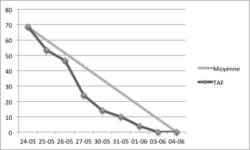
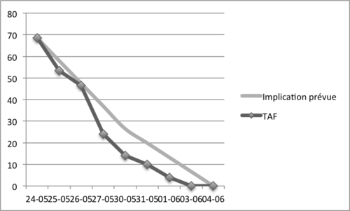
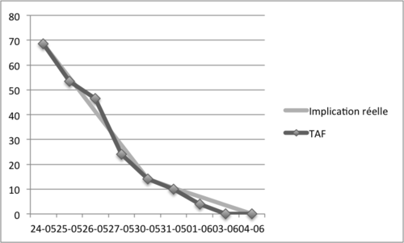

My team has to manage both software development projects and maintenance of applications already in production.
We adopted Scrum for our software development projects which occupies approximately 80% of our time. For other work, we usually divide the tasks according to our respective areas of expertise. There is no backlog for these taks and we often react in real time through a ticketing system.
When composing a Scrum sprint, we consider that the team is not 100% available for development projects but some days are reserved for the completion of maintenance or assistance of users.
Thus, for a 2 weeks sprint, a developer may be available only 8 days, while another one will devote 10 days to the sprint.
This allows us to have a pragmatic approach of our availibilities and to devote sufficient time to our side missions without impacting our velocity factor (which is reserved for the unexpected).
Here's the burn down of our last sprint :
If we compare the progress of the burn down compared to the trend line, we can assume that tasks difficulty was over-estimated, or that our velocity factor is too low.
However, the trend line does not match the actual mobilization of the team on the project because the team is not 100% available all days.
If we plot the predicted involvement of the team on the project, we note that it is much closer to the progession of burn down.
When we did retrospective, we found out that the time we spent on the project exceeds our initial expectations. So while the team had planned to spend 71 hours on the sprint, it was actually 82 hours that were consumed.
Because the team is not 100% available every day for the project, the reading of the burn down chart is actually very complicated. Indeed, when then burn down is moving away the trend line, it is hard to determine if this is a real problem for the project (misestimation for example) or if it is a temporary problem due to high or low mobilization of the team during a short period of time.
An unexpected phenomenon happened during the sprint. Made by the heat of the moment, the team was fully dedicated to the current sprint, forgetting (sometimes unconsciously) its other commitments. This unexpected investment has significantly improved the burn down, incrising the enthusiasm of the team around the project.
If we plot the actual team involvement, we note that it is almost similar to the burn down.
During retrospective, we realized our mistake lies in the lack of monitoring of the team's investment on the project. Indeed, in order to assess the progress of the project and prevent drifting, it is essential to have a reliable reference curve on our burn down chart. In the example shown above, the trend line that is traditionally found on burn down chart doesn't let us evaluate our sprint and instead provides a misreading of the graph.
We have added to our best practices a better monitoring the team involvement by plotting an average curve. We eventually update the curve daily or at least weekly.